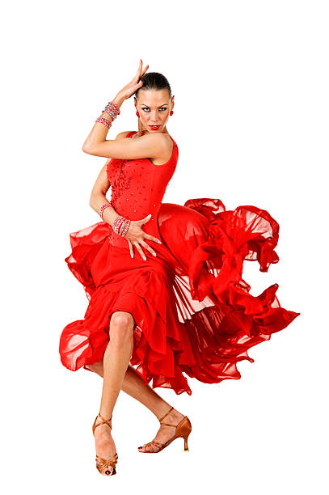

What is Salsa Dance?
Salsa dance is a lively and passionate partner dance that originated in Latin America and evolved through Cuban and Caribbean influences. It is closely connected to salsa music, known for its vibrant rhythms, energetic beats, and expressive melodies. Salsa combines footwork, spins, turns, and fluid body movements, creating a dynamic and exciting dance experience. Traditionally performed in pairs, salsa emphasizes connection, timing, and communication between partners. However, it can also be danced solo in styles such as “shines,” where dancers showcase individual footwork and creativity. Today, salsa is enjoyed worldwide in dance studios, social clubs, competitions, and festivals. |
 |
Key Elements of Salsa Dance
- Rhythm and Timing: Salsa is typically danced to an eight-count rhythm, requiring precise timing and musical awareness.
- Partner Connection: Communication through body language and lead-follow technique is essential.
- Footwork and Spins: Quick steps, turns, and intricate patterns create visual excitement.
- Expression and Energy: Salsa is full of passion, confidence, and joy, reflected in every movement.
Styles of Salsa
Salsa includes several popular styles, each with unique characteristics:
- Cuban Salsa (Casino): Circular movements with dynamic partner exchanges.
- LA Style (On1): Fast, flashy, and performance-oriented.
- New York Style (On2): Smooth and elegant, emphasizing musical interpretation.
- Colombian Salsa: Quick footwork and high energy.
Benefits of Learning Salsa Dance
Learning salsa improves coordination, balance, stamina, and flexibility. It also enhances social confidence, as it encourages interaction and teamwork with partners. Salsa dancing is not only a physical workout but also a joyful way to relieve stress and connect with music.
hrough regular classes, workshops, and social dance events, students develop technique, rhythm, and stage presence while experiencing the vibrant culture behind this beautiful Latin dance form.
Learn from Dancing Videos
|
|
Learn from experienced teachers
Explore in depth and learn from experienced teachers & Book a class to experience the beauty of these dances.